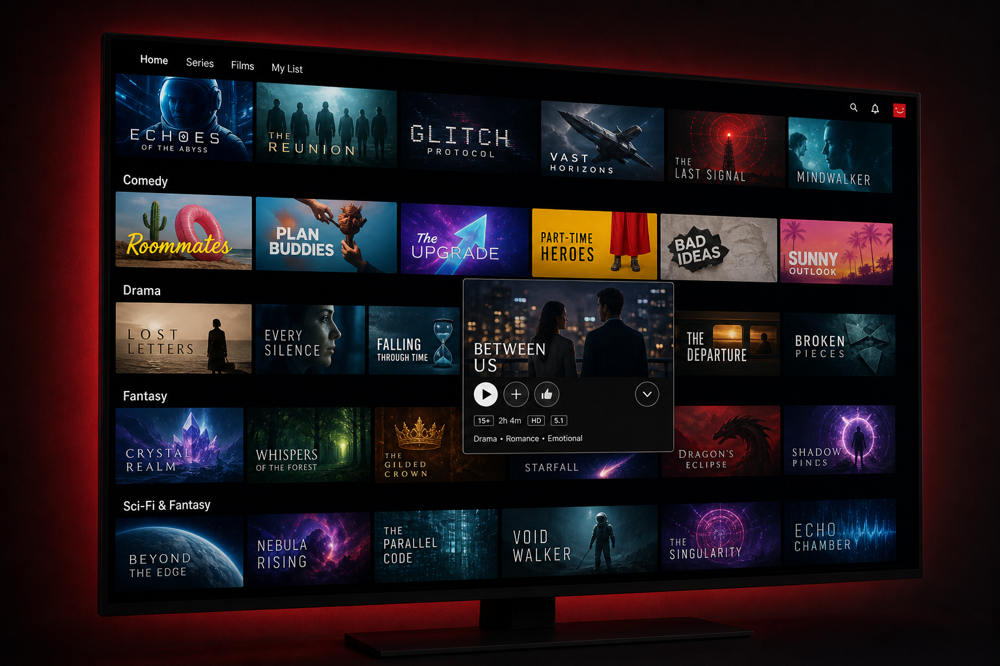
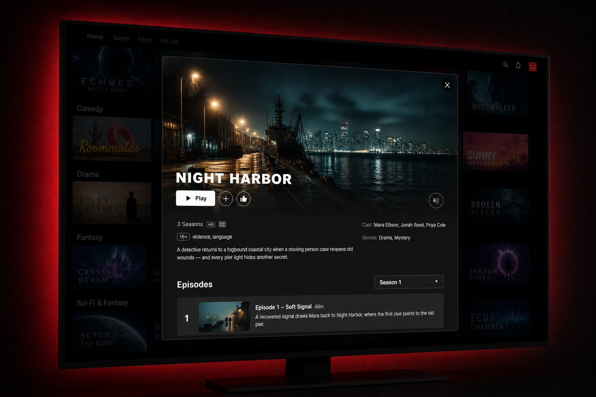
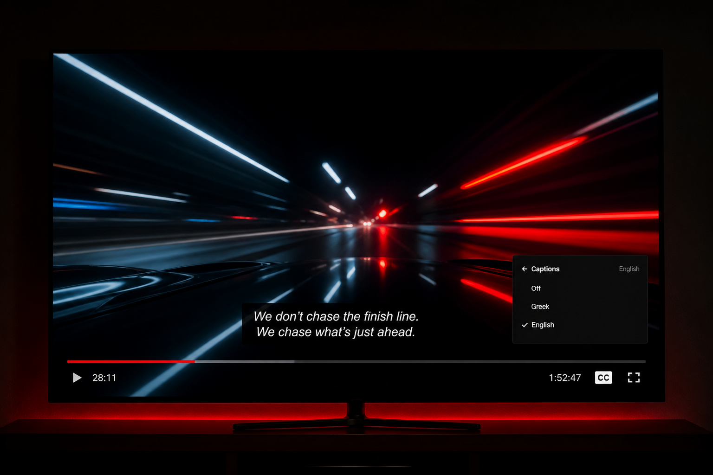
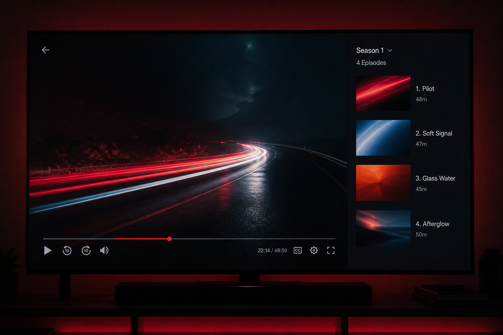
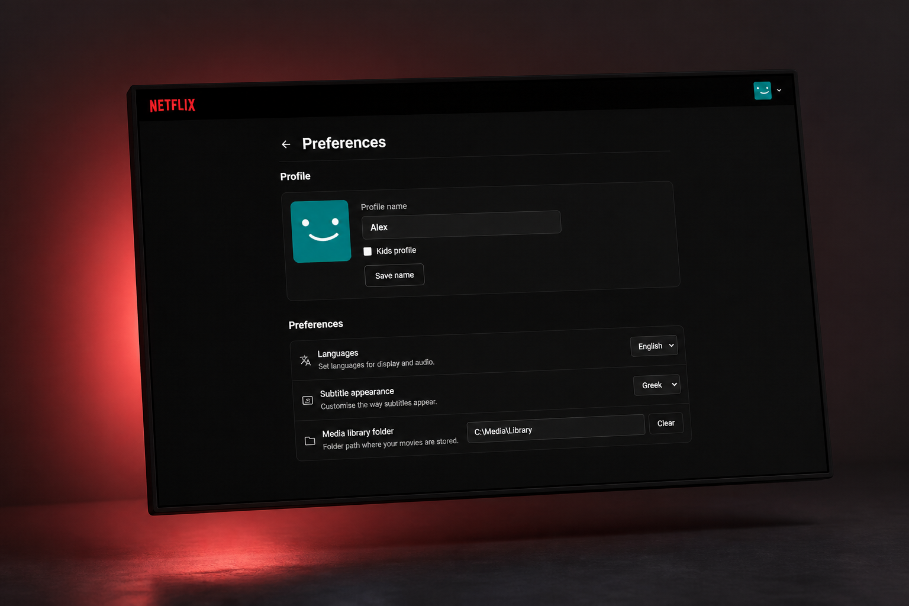

Your library.
Netflix style.
Browse and stream the movies and series already on your machine - posters, trailers, profiles, and a player that feels like the real thing.
Browse
Rows, hover cards, and trailers
Home, Films, Series, My List, and Continue Watching. Hover a title for the trailer and the quick actions you expect.

Details
The big title card
Backdrop, cast, rating, and play - plus episode lists for series, with unavailable episodes clearly dimmed.

Player
Built for long nights
Resume where you left off, switch audio and subtitles, cast to the TV, and keep watching episodes without leaving fullscreen.

Series
Seasons and episodes
Season folders and S01E01 naming turn into a proper episode rail - stills, titles, and next-episode when you’re ready.

Local-first
No accounts. No cloud library.
Your disk, your browser.
- Profiles Who’s watching, My List, and progress per person.
- MKV ready Converts and packages multi-audio titles so every track stays selectable.
- Subtitles Sidecar and embedded tracks, including Forced and SDH, labeled cleanly.
- Chromecast Hand off to the TV and resume on the browser when you stop.
- TMDB polish Optional posters, backdrops, and episode metadata.
- Self-hosted Run on your PC or NAS - GitHub Pages is only this showcase.
Setup
Point it at a folder
Set your media path, optional TMDB key, and you’re browsing. Docker works too if you prefer a container.
